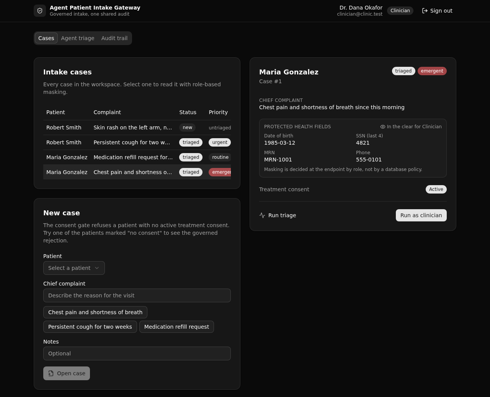

Same rules for a human and an agent.
A governed patient-intake API where a human coordinator, a clinician, and an AI agent call the same permissioned endpoints. Consent checks, PHI masking, and triage rules hold the same for both, and every access lands in one shared audit trail.

What it demonstrates
The point is control, not speed. An agent that triages intake is useful only if it is held to the rules a person is. The human triage endpoint and the agent triage endpoint call the same shared function, so the outcome and the audit are identical. Only the logged actor type differs.
Consent gate
A case create or update is refused unless the patient holds an active, unexpired treatment consent.
PHI masking by role
A clinician reads date of birth and SSN in the clear. A coordinator and the agent read them masked. Decided at the endpoint, not by a database policy.
Rule-driven triage
The active rule set decides a case's priority. The most severe matching rule wins, for the human path and the agent path alike.
One shared audit
Every read, create, update, and triage writes a row. Human and agent actions land in the same log.
Auth is API-layer role-based access control (an auth table, create_auth_token, and a role
guard on each endpoint). There is no row-level security anywhere.
API surface
Ten endpoints under the pinned API group intake.
| Verb | Path | What it enforces |
|---|---|---|
| POST | /login | Authenticates a seeded user, mints a role-scoped token. |
| GET | /cases | Case summaries with patient names. No PHI, no audit row. |
| GET | /cases/{case_id} | Reads one case. Masks PHI by role and logs the read. |
| POST | /cases | Creates a case. Role guard plus the treatment-consent gate. |
| POST | /cases/update | Updates a case. Same guards, re-checks required fields. |
| POST | /cases/triage | Human triage (clinician). Shared engine, actor type human. |
| POST | /agent/triage | Agent triage (agent service). Same engine, actor type agent. |
| GET | /access-log | The shared audit trail, filterable by case and actor type. |
| GET | /patients | A non-PHI patient picker plus the ids with an active consent. |
| POST | /seed | Idempotent demo seed so the app is browsable at once. |
Five screens
Role sign-in
Sign in as coordinator, clinician, or agent service. The role drives the rest of the app.
Case list and create
Every case with its status and priority. The create form shows the governed consent rejection.
Case detail
PHI masked or in the clear by role, the consent status, and a run-triage button with the rule that fired.
Agent triage
Run one case as the agent and as a clinician, side by side. Same priority, same rule.
Audit trail
One shared log with human and agent rows together, and the masked flag on each read.
Use this template
Point your AI coding agent at the repo, or clone it yourself. Either way you get a live, governed Xano backend in about a minute.
Start a new Xano app from the template at
https://github.com/xano-scratch/agent-patient-intake-gateway
Clone it, run: npm install, then npx xanots login,
then npm run xano:deploy to get a live backend and frontend URL.Or by hand:
git clone https://github.com/xano-scratch/agent-patient-intake-gateway
cd agent-patient-intake-gateway
npm install
npx xanots login
npm run xano:deploy
The live preview links in the build notes are ephemeral and expire. The durable artifact is this repo:
clone it and run npm run xano:deploy for a fresh live environment of your own.